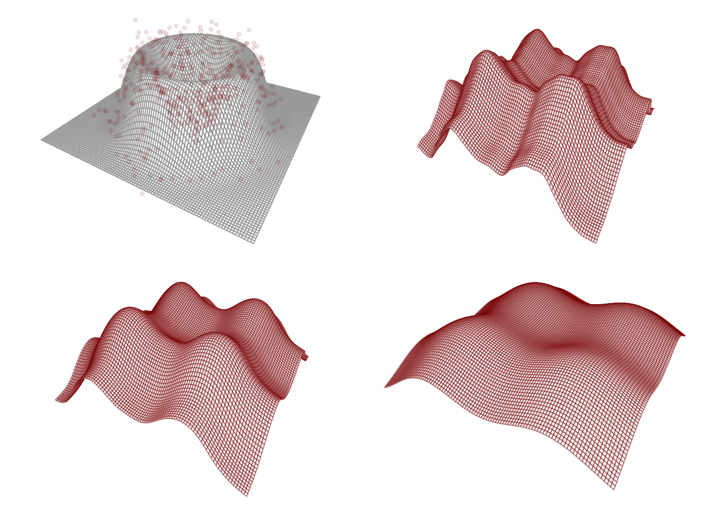

The raison d’être of the additive model is to circumvent the curse of dimensionality. Does it achieve its purpose?
We saw previously that the curse of dimensionality prevents us from estimating the unknown function \(m\) at any rate faster than \(n^{-2\beta/(2\beta + p)}\) when \(m\) belongs to a Hölder class \(\mathcal{H}^p(\beta,L)\).
However, if additivity holds, we find we can estimate each of the additive components \(m_1,\dots,m_p\) at the rate \(n^{-2\beta/(2\beta + 1)}\) when they belong to a Hölder class \(\mathcal{H}(\beta,L)\), which is the same rate at which we can estimate a single component in the univariate case. Another way of putting it is to say we can estimate each additive component at the same rate as in the case when all other components are known.
The following result, presented without proof, is from Stone (1985).
Theorem 5.1 (Least-squares splines performance in the additive model}) Suppose \(m = m_1 + \dots + m_p\), where \(m_j \in \mathcal{H}(\beta,L)\) for \(j=1,\dots,p\), and let \(\hat{\mathbf{m}}_{1,r}^{\text{spl}},\dots,\hat{\mathbf{m}}_{p,r}^{\text{spl}}\) be \(n \times 1\) vectors with the fitted values of the least-squares splines estimators of order \(r \geq \beta - 1\). Then, provided \(\mathbf{x}_1,\dots,\mathbf{x}_n\) are drawn from a “nice”1 distribution and \(K_n = \alpha n^{\frac{1}{2\beta + 1}}\) for some \(\alpha > 0\), we have \[
\mathbb{E}\|\hat{\mathbf{m}}_{j,r}^{\text{spl}} - \mathbf{m}_j \|_n^2 \leq C \cdot n^{-\frac{2 \beta}{2\beta + 1}}
\tag{5.1}\] for each \(j = 1,\dots,p\), for some constant \(C > 0\) for large enough \(n\).
In the above we use the notation \(\|\mathbf{u}\|_n^2 = n^{-1}\sum_{i=1}^nu_i^2\) for \(\mathbf{u}\in \mathbb{R}^n\).
We may well ask what the price of the additivity assumption is. If it is so powerful as to lift the curse of dimensionality, need it not have a potential downside? Indeed a downside there is, which is that if the additivity assumption does not hold, the estimate of \(m\) one obtains when assuming additivity may be a gross distortion of the true function; see Figure 5.1.
Code
m <-function(x){ u <-sqrt(sum(x^2)) val1 <-32/3* u^3* ( ( (0<= u) & ( u <1/4))) val2 <- (32* u^2-32* u^3-8* u +2/3 ) * ( (1/4<= u) & ( u <2/4) ) val3 <- (32* ( 1- u )^2-32* ( 1- u )^3-8* ( 1- u ) +2/3) * ( (2/4<= u) & ( u <3/4) ) val4 <-32/3* ( 1- u )^3* ( (3/4<= u) & ( u <1)) val <- val1 + val2 + val3 + val4return(val)}n <-500X <-matrix(0,n,2)theta <-runif(n,0,2*pi)r <-rbeta(n,2,2)X[,1] <- r*cos(theta)X[,2] <- r*sin(theta)Y <-apply(X,1,m) +rnorm(n,0,.1)backfitNW <-function(X,Y,h,tol=1e-6){ n <-nrow(X) p <-ncol(X) S <-array(0,dim=c(n,n,p)) # store smoother matrices in an arrayfor(j in1:p){ Sj <-dnorm(outer(X[,j],X[,j],"-")/h) Sj <- Sj /apply(Sj,2,sum) S[,,j] <- Sj } conv <-FALSE M <-matrix(0,n,p)while(conv ==FALSE){ M0 <- Mfor(j in1:p){ M[,j] <- S[,,j] %*% (Y -apply(M[,-j,drop =FALSE],1,sum)) M[,j] <- M[,j,drop =FALSE] -mean(M[,j]) } conv <-max(abs(M - M0)) < tol }return(M)}mNW <-function(x,data,h){ X <- data$X Y <- data$Y Wx <-dnorm((X - x)/h) /sum(dnorm((X - x)/h)) mx <-sum(Wx*Y)return(mx) }hh <-c(0.05,0.1,0.2)grid <-100x1 <- x2 <-seq(-1,1,length=grid)MM <-array(0,dim=c(n,n,length(hh)))m1x1 <- m2x2 <-matrix(0,grid,length(hh))for(j in1:length(hh)){ MM[,,j] <-backfitNW(X,Y,h = hh[j]) m1x1[,j] <-sapply(x1,FUN=mNW,data =list(Y = Y - MM[,2,j], X = X[,1]), h = hh[j]) m2x2[,j] <-sapply(x2,FUN=mNW,data =list(Y = Y - MM[,1,j], X = X[,2]), h = hh[j])}mx <-matrix(0,grid,grid) mNWadd <-array(0,dim=c(grid,grid,length(hh)))for(i in1:grid)for( j in1:grid){ mx[i,j] <-m(c(x1[i],x2[j]))for(k in1:length(hh)){ mNWadd[i,j,k] <- m1x1[i,k] + m2x2[j,k] } }par(mfrow=c(2,2), mar=c(0,0,0,0))persp_out <-persp(x = x1,y = x2,z = mx,theta =30,phi =30,r =sqrt(1),d =1,box =FALSE,scale =FALSE,border ="dark gray")points(trans3d(x = X[,1], y = X[,2], z = Y, pmat = persp_out),pch =19,cex = .6,col =rgb(.545,0,0,.1))for(k in1:length(hh)){ persp_out <-persp(x = x1,y = x2,z = mNWadd[,,k],theta =30,phi =30,r =sqrt(1),d =1,box =FALSE,scale =FALSE,border =rgb(.545,0,0,.5))}

Figure 5.1: Nadaraya-Watson backfitting estimators at three bandwidths assuming an additive model in a setting with \(p=2\). Top left shows the true function \(m\).
The curse of dimensionality, as we have seen in (REFER TO TABLE IN EARLIER LECTURE), takes effect even at small dimensions like \(p=2,3,4\) such that estimating a regression function \(m\) without the additivity assumption is likely to require a prohibitively large sample size when \(p \geq 5\). The additive model helps, but one may wonder how far one can push it. What if \(p\) becomes very large?
We find that if we track the dimension \(p\) in the work of Stone (1985) we find that it is part of the constant \(C\) appearing in #eq-stone. Popping the \(p\) out of this constant gives us the bound \[
\mathbb{E}\|\hat{\mathbf{m}}_{j,r}^{\text{spl}} - \mathbf{m}_j \|_n^2 \leq C \cdot p\cdot n^{-\frac{2 \beta}{2\beta + 1}}.
\tag{5.2}\] From here we see that if \(p\) becomes very large, estimation in the additive model can get worse. Moreover, if we wanted to consider an asymptotic regime in which \(p\) is allowed to grow with \(n\), we would find that the rate at which we can allow \(p\) to grow must depend on the parameter \(\beta\) governing the smoothness of the underlying functions.
Closer analysis reveals that the appearance of \(p\) in the bound in Equation 5.2 is the result of an accumulation of bias over the estimation of all \(p\) of the additive components. If we wish to consider large \(p\), a further assumption we could make, in addition to additivity, is the assumption that many of the additive components are zero, that is \(m_j(x) = 0\) for many \(j\). We find that if the number of nonzero functions is \(s\), we can construct an estimator under which the \(p\) is replaced by \(s\). Then we may assume that even if \(p\) is very large, the number of nonzero function \(s\) is not so large, and the bound is then not so bad.
This brings up to the sparse additive model, in which many additive components are assumed to be zero.
Stone, Charles J. 1985. “Additive Regression and Other Nonparametric Models.”The Annals of Statistics, 689–705.